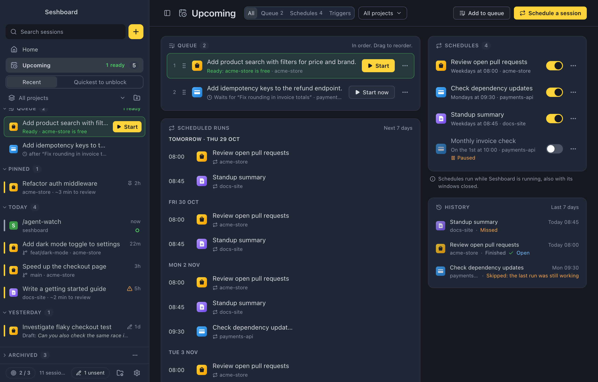
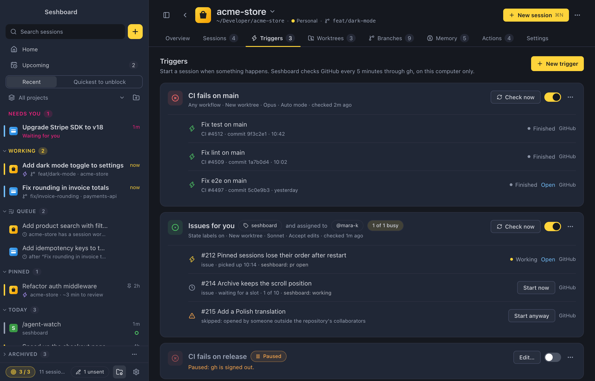
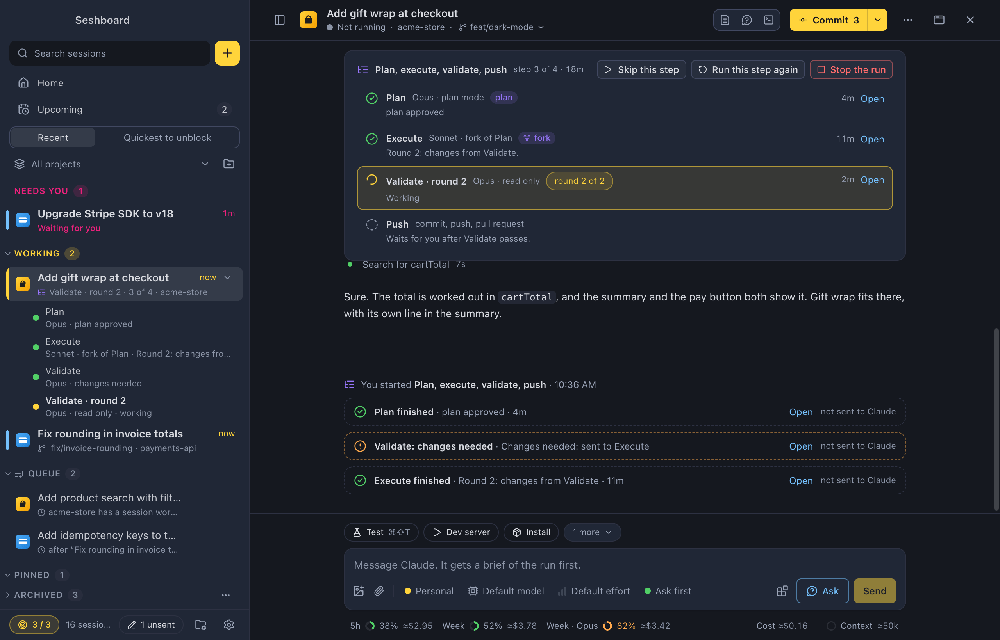

Out now
Claude Code that starts on its own
Schedules, triggers and pipelines: a session every morning, one when CI fails, or plan, build, check and push in one run. See it all in Upcoming.
Now on
Mac
Windows
Linux
Schedules, triggers and pipelines: a session every morning, one when CI fails, or plan, build, check and push in one run. See it all in Upcoming.


